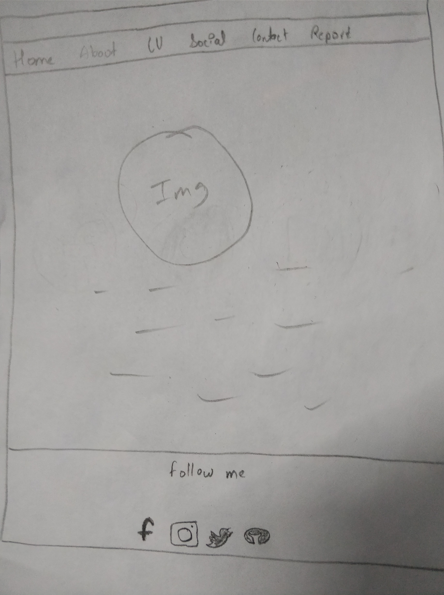
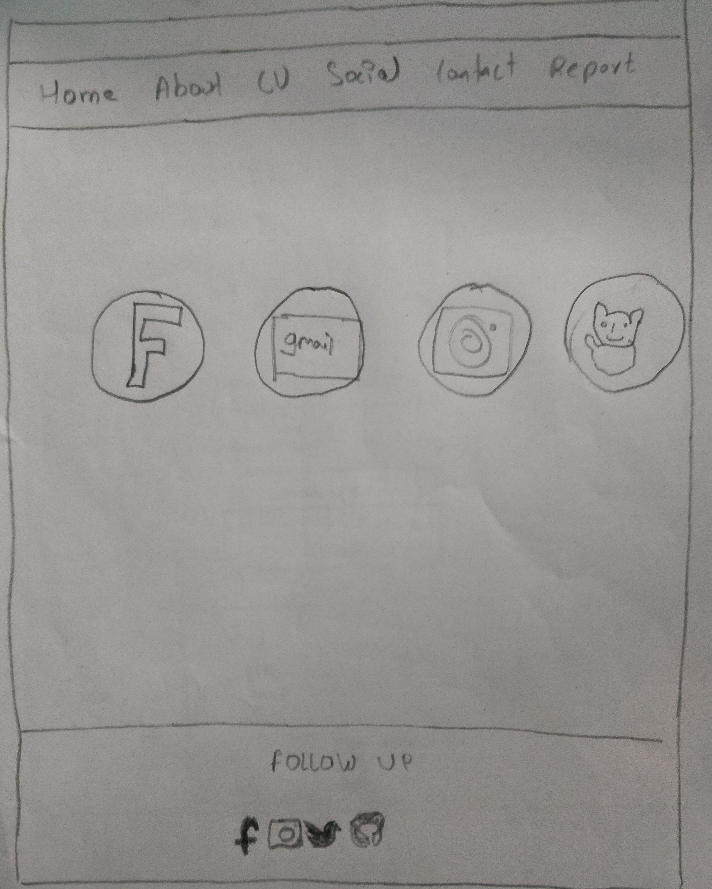
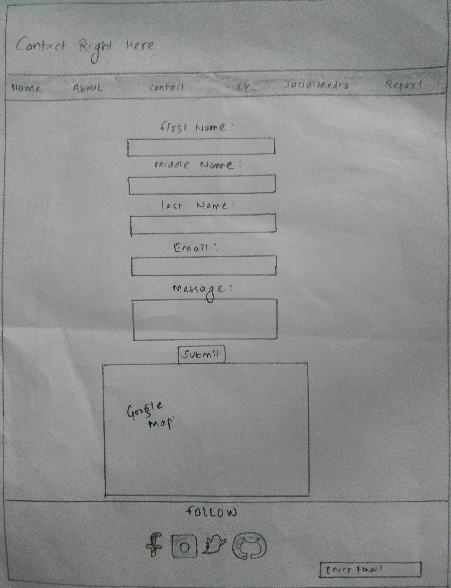
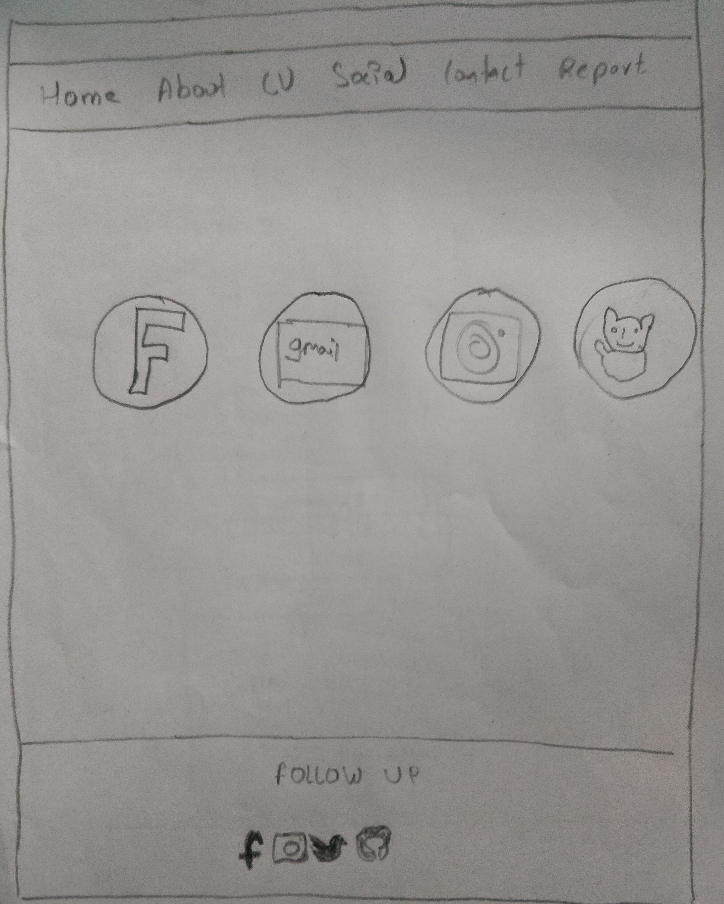
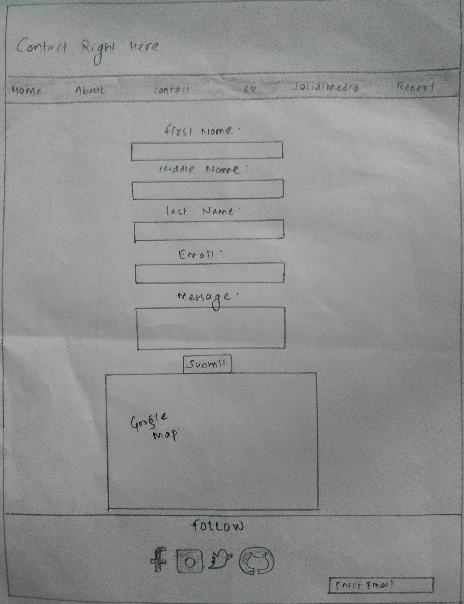
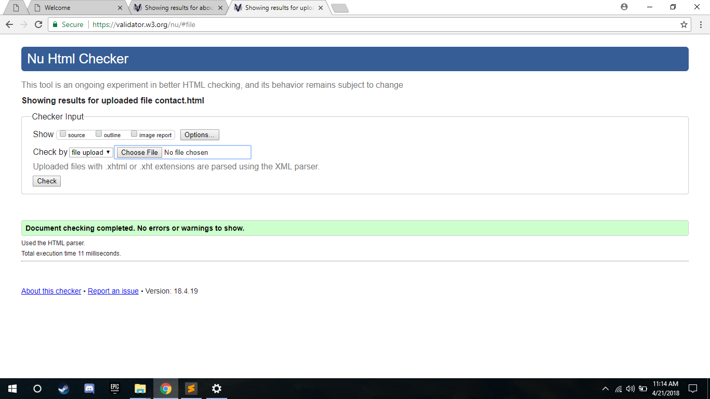
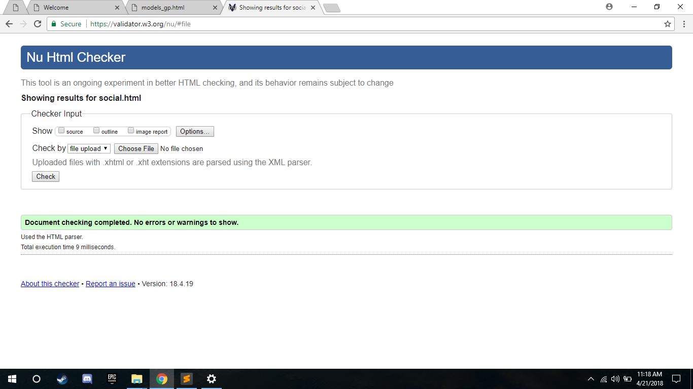
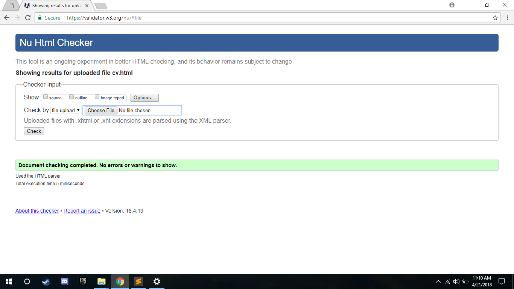

Table of contents
1. Introduction
2. UI designs
3.Wireframe
4.Testing and validation
5.My Experience
6.References
1. Introduction
Web development is the process which can develop web page throught HTML,CSS,JS etc. This application is generally a application which be run in various browser like Google chrome, safari , Firefox etc. Webpage are generally created for various purpose.It can be used for making giving information, for business purpose, to reserve place, to know about organization etc. We can access it from worldwide web. In this project our first work is to create webpages which consists of our resume.
Assingment was provided to us in which we needed to create our own personal webpage. To develop webpage we need to have knowlege of web designing. I looked various website, tutorial, slides which were taught to us in lecture classes. In order to design my personal website, I looked for different personal sites and got some ideas about the personal webpage which i was going to make for my own. To design my personal webpage at first i created wireframes of the webpage, then i started to write the code on HTML and CSS. After making the design of the webpage i tested the code using validator and solved the problems it worked properly.
2. UI designs
User interface is a thing which focus on maximum usabiity of the users experiences. UI helped me with many thing. It makes the website very user friendly and accesible for new users.UserInterface cannot make our webpage good looking but it will give us an smooth and very good performance. Some of the example of UserInterface is it make best color combination, animation, uses of material designs, hover effects, etc.
3.Wireframe
Wireframes are the layout designs for webpages, which can generally define the layout of the website. Generally it is also defined as the blueprint or sketch of the site.I also had created the wireframes inorder to generalize how the system will look and how different design can be made. Some of the wireframes are mentioned below.


 



4.Testing and validation
After completing the design phase my webpage was tested by using w3.org validator. in which we checked the speed, working and errors of the webpage. Some of the errors were detected on my codes which was solved later although it was hard. The evidences of the validations are below with the screenshots of each webpage.




5.My Experiences
This project would not have been complered without the knowledge or learnimg HTML and CSS. While doing this project i learned many things on HTML and CSS. Some of the basic concepts like material design, flexbox, transation, flex properties are used for making this site. I learned these thing with the help of lectures and tutorials. Doing this project of making my personal site I was more clear with these concepts. I also faced more problems in creating mobile responsive device but with the help of tutorial, videos and by discussing it with my friends it helped me to solve the problem which I was facing.6.References
- CSS Media Queries. 2018. CSS Media Queries. [ONLINE] Available at: https://www.w3schools.com/css/css3_mediaqueries.asp. [Accessed 22 April 2018].
- CSS Flexbox (Flexible Box). 2018. CSS Flexbox (Flexible Box). [ONLINE] Available at: https://www.w3schools.com/css/css3_flexbox.asp. [Accessed 22 April 2018].
- CSS Animations. 2018. CSS Animations. [ONLINE] Available at: https://www.w3schools.com/css/css3_animations.asp. [Accessed 22 April 2018].
- CSS Navigation Bar. 2018. CSS Navigation Bar. [ONLINE] Available at: https://www.w3schools.com/css/css_navbar.asp. [Accessed 22 April 2018].
- Icons from Font Awesome, Bootstrap and Google. 2018. Icons from Font Awesome, Bootstrap and Google. [ONLINE] Available at: https://www.w3schools.com/icons/icons_reference.asp. [Accessed 22 April 2018].
- HTML Forms. 2018. HTML Forms. [ONLINE] Available at: https://www.w3schools.com/html/html_forms.asp. [Accessed 22 April 2018].
- background hd. 2018. background hd. [ONLINE] Available at: http://www.sdjgjx.com/page/backgrounds/6099.html. [Accessed 15 July 2018].